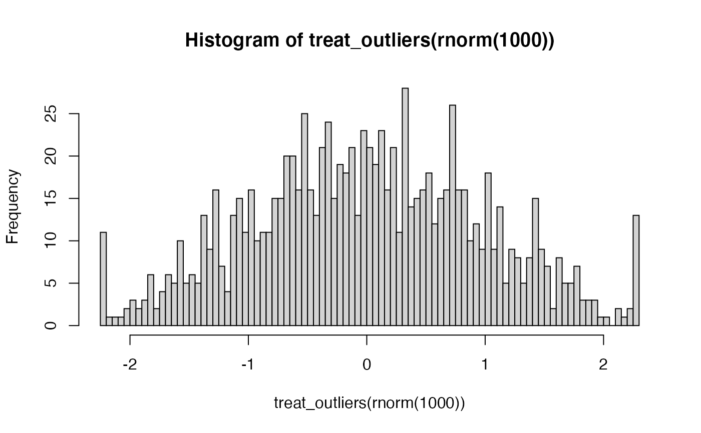

treat_outliers.RdTreats numerical outliers either by winsorizing or by truncating.
treat_outliers(x, percentile = 0.01, truncate = FALSE, by = NULL, ...)
| x | Data that is coercible into a numeric vector or matrix. If it is a data frame then all numerical variables of the data frame are coerced into a matrix. |
|---|---|
| percentile | A numeric scalar.
The percentile below which observations
are considered to be outliers. Is treated symmetrical so that
|
| truncate | A logical scalar. If TRUE then data are truncated (i.e., set to NA if out of bounds). Defaults to FALSE. |
| by | NULL or either a factor vector or a character string
identifying a factor variable in the data frame provided by x.
The factor indicated by 'by' is being used to identify groups
by which the outlier treatment is applied. Defaults to NULL (no grouping).
If provided, the resulting vector must not contain NAs and needs to be such so that
|
| ... | Additional parameters forwarded to quantile (notably, |
A numeric vector or matrix containing the outlier-treated x.
if a data frame was provided in x, a data frame with its numeric variables
replaced by their outlier-treated values.
All members of the numerical matrix are checked for finiteness and are set to NA if they are not finite. NAs are removed when calculating the outlier cut-offs.
#> [1] 5.95 5.95 5.95 5.95 5.95 6.00 7.00 8.00 9.00 10.00 11.00 12.00 #> [13] 13.00 14.00 15.00 16.00 17.00 18.00 19.00 20.00 21.00 22.00 23.00 24.00 #> [25] 25.00 26.00 27.00 28.00 29.00 30.00 31.00 32.00 33.00 34.00 35.00 36.00 #> [37] 37.00 38.00 39.00 40.00 41.00 42.00 43.00 44.00 45.00 46.00 47.00 48.00 #> [49] 49.00 50.00 51.00 52.00 53.00 54.00 55.00 56.00 57.00 58.00 59.00 60.00 #> [61] 61.00 62.00 63.00 64.00 65.00 66.00 67.00 68.00 69.00 70.00 71.00 72.00 #> [73] 73.00 74.00 75.00 76.00 77.00 78.00 79.00 80.00 81.00 82.00 83.00 84.00 #> [85] 85.00 86.00 87.00 88.00 89.00 90.00 91.00 92.00 93.00 94.00 95.00 95.05 #> [97] 95.05 95.05 95.05 95.05#> [1] NA NA NA NA NA 6 7 8 9 10 11 12 13 14 15 16 17 18 19 20 21 22 23 24 25 #> [26] 26 27 28 29 30 31 32 33 34 35 36 37 38 39 40 41 42 43 44 45 46 47 48 49 50 #> [51] 51 52 53 54 55 56 57 58 59 60 61 62 63 64 65 66 67 68 69 70 71 72 73 74 75 #> [76] 76 77 78 79 80 81 82 83 84 85 86 87 88 89 90 91 92 93 94 95 NA NA NA NA NA# When you like the percentiles calculated like STATA's summary or pctile: treat_outliers(seq(1:100), 0.05, type = 2)#> [1] 5.5 5.5 5.5 5.5 5.5 6.0 7.0 8.0 9.0 10.0 11.0 12.0 13.0 14.0 15.0 #> [16] 16.0 17.0 18.0 19.0 20.0 21.0 22.0 23.0 24.0 25.0 26.0 27.0 28.0 29.0 30.0 #> [31] 31.0 32.0 33.0 34.0 35.0 36.0 37.0 38.0 39.0 40.0 41.0 42.0 43.0 44.0 45.0 #> [46] 46.0 47.0 48.0 49.0 50.0 51.0 52.0 53.0 54.0 55.0 56.0 57.0 58.0 59.0 60.0 #> [61] 61.0 62.0 63.0 64.0 65.0 66.0 67.0 68.0 69.0 70.0 71.0 72.0 73.0 74.0 75.0 #> [76] 76.0 77.0 78.0 79.0 80.0 81.0 82.0 83.0 84.0 85.0 86.0 87.0 88.0 89.0 90.0 #> [91] 91.0 92.0 93.0 94.0 95.0 95.5 95.5 95.5 95.5 95.5df <- data.frame(a = seq(1:1000), b = rnorm(1000), c = sample(LETTERS[1:5], 1000, replace=TRUE)) winsorized_df <- treat_outliers(df) summary(df)#> a b c #> Min. : 1.0 Min. :-2.938978 A:197 #> 1st Qu.: 250.8 1st Qu.:-0.686197 B:217 #> Median : 500.5 Median : 0.008579 C:196 #> Mean : 500.5 Mean : 0.004340 D:206 #> 3rd Qu.: 750.2 3rd Qu.: 0.666959 E:184 #> Max. :1000.0 Max. : 2.755418summary(winsorized_df)#> a b c #> Min. : 10.99 Min. :-2.291499 A:197 #> 1st Qu.:250.75 1st Qu.:-0.686197 B:217 #> Median :500.50 Median : 0.008579 C:196 #> Mean :500.50 Mean : 0.003761 D:206 #> 3rd Qu.:750.25 3rd Qu.: 0.666959 E:184 #> Max. :990.01 Max. : 2.223346#> df$c: A #> a b c #> Min. : 7.0 Min. :-2.27411 A:197 #> 1st Qu.:232.0 1st Qu.:-0.58165 B: 0 #> Median :481.0 Median :-0.01595 C: 0 #> Mean :467.3 Mean :-0.02177 D: 0 #> 3rd Qu.:697.0 3rd Qu.: 0.62418 E: 0 #> Max. :992.0 Max. : 2.65490 #> ------------------------------------------------------------ #> df$c: B #> a b c #> Min. : 1 Min. :-2.36221 A: 0 #> 1st Qu.:260 1st Qu.:-0.75172 B:217 #> Median :510 Median :-0.02011 C: 0 #> Mean :500 Mean :-0.00111 D: 0 #> 3rd Qu.:734 3rd Qu.: 0.71837 E: 0 #> Max. :997 Max. : 2.41166 #> ------------------------------------------------------------ #> df$c: C #> a b c #> Min. : 3.0 Min. :-2.612334 A: 0 #> 1st Qu.:236.5 1st Qu.:-0.681883 B: 0 #> Median :467.0 Median : 0.055197 C:196 #> Mean :493.6 Mean :-0.001837 D: 0 #> 3rd Qu.:756.5 3rd Qu.: 0.658370 E: 0 #> Max. :998.0 Max. : 2.648932 #> ------------------------------------------------------------ #> df$c: D #> a b c #> Min. : 2.0 Min. :-2.93898 A: 0 #> 1st Qu.: 271.5 1st Qu.:-0.81511 B: 0 #> Median : 552.0 Median :-0.09748 C: 0 #> Mean : 519.6 Mean :-0.08223 D:206 #> 3rd Qu.: 759.2 3rd Qu.: 0.59962 E: 0 #> Max. :1000.0 Max. : 2.68256 #> ------------------------------------------------------------ #> df$c: E #> a b c #> Min. : 17.0 Min. :-2.3902 A: 0 #> 1st Qu.:272.2 1st Qu.:-0.5324 B: 0 #> Median :541.5 Median : 0.1201 C: 0 #> Mean :522.5 Mean : 0.1422 D: 0 #> 3rd Qu.:792.0 3rd Qu.: 0.8461 E:184 #> Max. :988.0 Max. : 2.7554#> df$c: A #> a b c #> Min. : 39.4 Min. :-1.52242 A:197 #> 1st Qu.:232.0 1st Qu.:-0.58165 B: 0 #> Median :481.0 Median :-0.01595 C: 0 #> Mean :466.6 Mean :-0.02917 D: 0 #> 3rd Qu.:697.0 3rd Qu.: 0.62418 E: 0 #> Max. :940.8 Max. : 1.36131 #> ------------------------------------------------------------ #> df$c: B #> a b c #> Min. : 63.8 Min. :-1.58519 A: 0 #> 1st Qu.:260.0 1st Qu.:-0.75172 B:217 #> Median :510.0 Median :-0.02011 C: 0 #> Mean :500.8 Mean :-0.01075 D: 0 #> 3rd Qu.:734.0 3rd Qu.: 0.71837 E: 0 #> Max. :948.4 Max. : 1.55765 #> ------------------------------------------------------------ #> df$c: C #> a b c #> Min. : 43.5 Min. :-1.816475 A: 0 #> 1st Qu.:236.5 1st Qu.:-0.681883 B: 0 #> Median :467.0 Median : 0.055197 C:196 #> Mean :493.8 Mean :-0.009225 D: 0 #> 3rd Qu.:756.5 3rd Qu.: 0.658370 E: 0 #> Max. :968.2 Max. : 1.507916 #> ------------------------------------------------------------ #> df$c: D #> a b c #> Min. : 72.25 Min. :-1.69480 A: 0 #> 1st Qu.:271.50 1st Qu.:-0.81511 B: 0 #> Median :552.00 Median :-0.09748 C: 0 #> Mean :519.69 Mean :-0.07152 D:206 #> 3rd Qu.:759.25 3rd Qu.: 0.59962 E: 0 #> Max. :944.50 Max. : 1.67448 #> ------------------------------------------------------------ #> df$c: E #> a b c #> Min. : 54.2 Min. :-1.3727 A: 0 #> 1st Qu.:272.2 1st Qu.:-0.5324 B: 0 #> Median :541.5 Median : 0.1201 C: 0 #> Mean :522.6 Mean : 0.1510 D: 0 #> 3rd Qu.:792.0 3rd Qu.: 0.8461 E:184 #> Max. :940.2 Max. : 1.8834